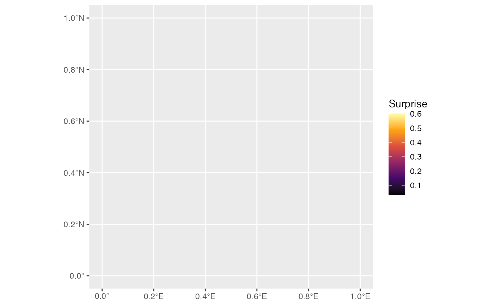
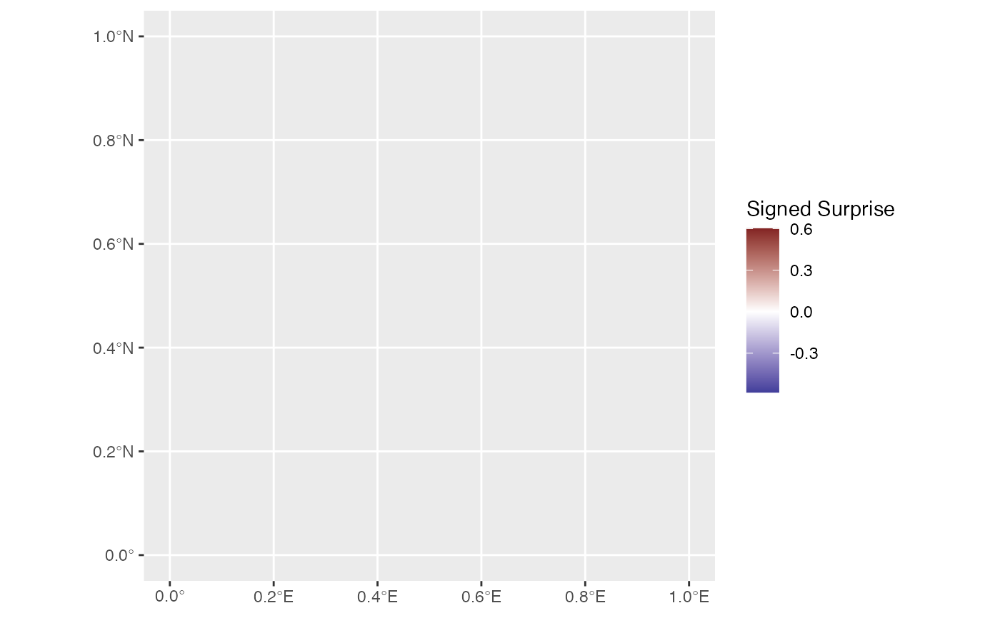
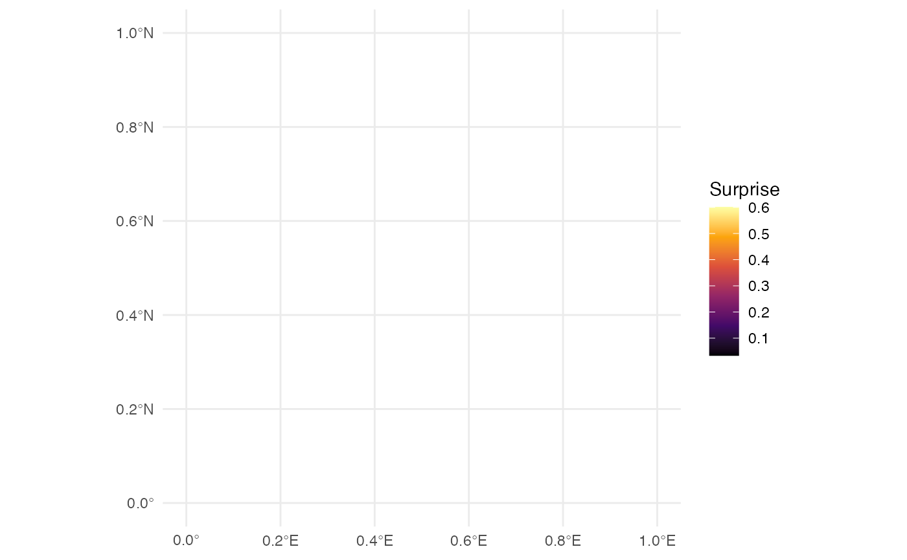

A convenience geom that combines stat_surprise with geom_sf for
easy creation of surprise maps.
Arguments
- mapping
Aesthetic mapping created by
ggplot2::aes(). Required aesthetics aregeometry(from sf) andobserved. Optional aesthetics includeexpectedandsample_size.- data
Data (typically an sf object)
- position
Position adjustment
- na.rm
Remove NA values?
- show.legend
Show legend?
- inherit.aes
Inherit aesthetics from ggplot?
- fill_type
Type of surprise for fill aesthetic:
"surprise": Unsigned surprise (always positive)
"signed": Signed surprise (positive = higher than expected, negative = lower than expected)
- models
Character vector of model types to use. Options: "uniform", "baserate", "gaussian", "sampled", "funnel"
- color, colour
Border color for polygons
- linewidth
Border line width
- ...
Additional arguments passed to the layer
Aesthetics
geom_surprise understands the following aesthetics:
- geometry
sf geometry column (required)
- observed
Observed values (required)
- expected
Expected values (optional, for base rate model)
- sample_size
Sample sizes (optional, for funnel model)
- fill
Mapped to surprise by default
- color/colour
Border color
Examples
library(ggplot2)
#> Warning: package ‘ggplot2’ was built under R version 4.5.2
library(sf)
#> Warning: package ‘sf’ was built under R version 4.5.2
#> Linking to GEOS 3.13.0, GDAL 3.8.5, PROJ 9.5.1; sf_use_s2() is TRUE
nc <- st_read(system.file("shape/nc.shp", package = "sf"), quiet = TRUE)
# Basic surprise map - geometry must be mapped explicitly
ggplot(nc) +
geom_surprise(aes(geometry = geometry, observed = SID74, expected = BIR74)) +
scale_fill_surprise()

# Signed surprise with diverging scale
ggplot(nc) +
geom_surprise(
aes(geometry = geometry, observed = SID74, expected = BIR74),
fill_type = "signed"
) +
scale_fill_surprise_diverging()

# Customize appearance
ggplot(nc) +
geom_surprise(
aes(geometry = geometry, observed = SID74, expected = BIR74),
color = "white",
linewidth = 0.2
) +
scale_fill_surprise() +
theme_minimal()
